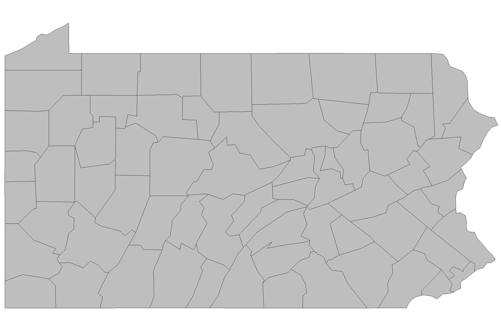
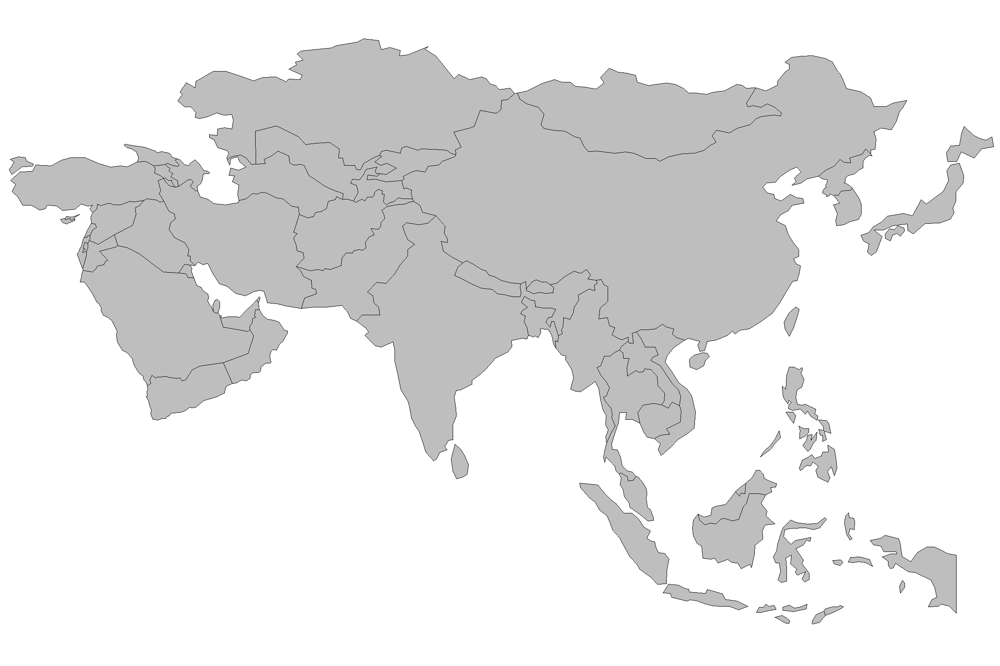
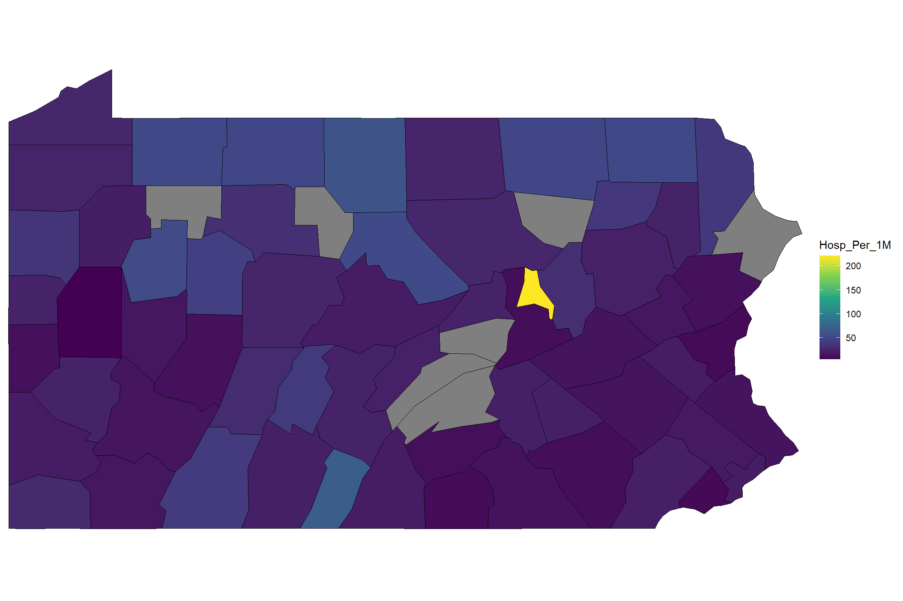

library(here)
library(data.table)
library(magrittr)
library(ggplot2)
library(sf)
library(rnaturalearth)
library(devtools)
library(kableExtra)Part 1: Finding, loading, and cleaning data
This is part 1 of the 3 part series.
Setup
Load the required R packages from CRAN and github.
From CRAN:
From github:
devtools::install_github("deandevl/RspatialPkg")
devtools::install_github("deandevl/RcensusPkg")Define the file path to the shapefiles folder at the root of this Rstudio project for holding downloaded shapefiles:
shapefile_directory <- file.path(here(), "shapefiles")Introduction
If you want to draw state borders (polygons), county borders (more polygons), major highways (lines), and highway rest stops (points), add each of them as an individual layer to the same plot, and color them as you please. There are no constraints when visualizing geospatial data in R.
This post will focus on how to find, import, and clean geospatial data. The actual graphing will come in Part 2 (static maps with ggplot2) and Part 3 (interactive maps with leaflet).
A brief introduction to simple features data in R
Out in the wild, map data most frequntly comes as either geoJSON files (.geojson) or Shapefiles (.shp). These files will, at the very minimum, contain information about the geometry of each object to be drawn, such as instructions to draw a point in a certain location or to draw a polygon with certain dimensions. The raw file may, however, also contain any amount of additional information, such as a name for the object (“Pennsylvania”), or summary statistics (GDP per capita, total population, etc.).
Read raw shapefile data from “OpenDataPhilly”.
zip_geojson <- "http://data.phl.opendata.arcgis.com/datasets/b54ec5210cee41c3a884c9086f7af1be_0.geojson"
phl_zip_raw_sf <- sf::read_sf(zip_geojson)| OBJECTID | CODE | COD | Shape__Area | Shape__Length | geometry |
|---|---|---|---|---|---|
| 1 | 19120 | 20 | 91779697 | 49921.54 | POLYGON ((-75.11107 40.0468... |
| 2 | 19121 | 21 | 69598787 | 39534.89 | POLYGON ((-75.19227 39.9946... |
| 3 | 19122 | 22 | 35916319 | 24124.65 | POLYGON ((-75.15406 39.9860... |
| 4 | 19123 | 23 | 35851751 | 26421.73 | POLYGON ((-75.1519 39.97056... |
| 5 | 19124 | 24 | 144808025 | 63658.77 | POLYGON ((-75.0966 40.04249... |
| 6 | 19125 | 25 | 48226254 | 30113.60 | POLYGON ((-75.10849 39.9703... |
head(phl_zip_raw_sf)Simple feature collection with 6 features and 5 fields
Geometry type: POLYGON
Dimension: XY
Bounding box: xmin: -75.20435 ymin: 39.95577 xmax: -75.06099 ymax: 40.05317
Geodetic CRS: WGS 84
# A tibble: 6 × 6
OBJECTID CODE COD Shape__Area Shape__Length geometry
<int> <chr> <int> <dbl> <dbl> <POLYGON [°]>
1 1 19120 20 91779697. 49922. ((-75.11107 40.04682, -75.1094…
2 2 19121 21 69598787. 39535. ((-75.19227 39.99463, -75.1920…
3 3 19122 22 35916319. 24125. ((-75.15406 39.98601, -75.1532…
4 4 19123 23 35851751. 26422. ((-75.1519 39.97056, -75.1515 …
5 5 19124 24 144808025. 63659. ((-75.0966 40.04249, -75.09281…
6 6 19125 25 48226254. 30114. ((-75.10849 39.9703, -75.11051…We are told the Coordinate Reference System (CRS), which in this case is “WGS 84.” CRSs are cartographers’ ways of telling each other what system they used for describing points on the earth. Cartographers need to pick an equation for an ellipsoid to approximate earth’s shape since it’s slightly pear-shaped. Cartographers also need to determine a set of reference markers–known as a datum–to use to set coordinates, as earth’s tectonic plates shift ever so slightly over time. Together, the ellipsoid and datum become a CRS.
WGS 84 is one of the most common CRSs and is the standard used for GPS applications. In the US, you may see data provided using NAD 83. WGS 84 and NAD 83 were originally identical (back in the 1980s), but both have been modified over time as the earth changes and scientific knowledge progresses. WGS 84 seeks to keep the global average of points as similar as possible while NAD 83 tries to keep the North American plate as constant as possible. The net result is that the two different CRSs may vary by about a meter in different places. This is not a big difference for most purposes, but sometimes you may need to adjust.
If we wanted to transform our data between CRSs, we would call
sf::st_transform(map_raw, crs = 4326), where 4362 is the EPSG code of the CRS into which we would like to transform our geometry. EPSGs are a standard, shorthand way to refer to various CRSs. 4326 is the EPSG code for WGS 84 and 4269 is the EPSG code for NAD 83.
Finding data
The trouble comes in trying to find the data you need–both the geometry and the proper additional fields–and getting them together into the same object in R.
Finding geospatial data
Import US Census Bureau county data from Pennsylvania.
penn_fips <- usmap::fips(state = "pennsylvania")
express <- expression(STATEFP == penn_fips)
penn_cty_sf <- RcensusPkg::tiger_counties_sf(
output_dir = shapefile_directory,
vintage = 2018,
general = TRUE,
resol = "20m",
express = express,
sf_info = FALSE
) %>%
data.table::as.data.table(.) %>%
.[, .(GEOID, NAME, COUNTYFP, COUNTYNS, geometry)] %>%
.[, NAME := toupper(NAME)] %>%
data.table::setnames(., old = "NAME", new = "COUNTY") %>%
sf::st_as_sf(.)| GEOID | COUNTY | COUNTYFP | COUNTYNS | geometry |
|---|---|---|---|---|
| 42113 | SULLIVAN | 113 | 01213687 | MULTIPOLYGON (((-76.81373 4... |
| 42015 | BRADFORD | 015 | 01213660 | MULTIPOLYGON (((-76.92685 4... |
| 42099 | PERRY | 099 | 01213682 | MULTIPOLYGON (((-77.67176 4... |
| 42035 | CLINTON | 035 | 01214721 | MULTIPOLYGON (((-78.09338 4... |
| 42075 | LEBANON | 075 | 01214034 | MULTIPOLYGON (((-76.67804 4... |
| 42007 | BEAVER | 007 | 01214112 | MULTIPOLYGON (((-80.51971 4... |
RspatialPkg::get_geom_sf(
sf = penn_cty_sf,
hide_x_tics = T,
hide_y_tics = T,
panel_color = "white",
panel_border_color = "white"
)
For non-US applications, use the package rnaturalearth which provides easy access to global data.
asia_sf <- rnaturalearth::ne_countries(
continent = "Asia",
returnclass = "sf"
)RspatialPkg::get_geom_sf(
sf = asia_sf,
hide_x_tics = T,
hide_y_tics = T,
panel_color = "white",
panel_border_color = "white"
)
Finding non-geospatial data
Chances are that you are coming to a geospatial mapping project with a particular dataset in mind.
…Hopefully, your data has an ID that you can use to identify each geospatial region.
Join PA’s Department of Health hospital data with PA’s county geometries.
- Read the source data:
pa_hospitals_csv_path <- file.path(here(), "data", "DOH_Hospitals201912.csv")
pa_hospitals_raw_dt <- data.table::fread(file = pa_hospitals_csv_path) %>%
.[, .(FACILITY_N,COUNTY)] %>%
.[, COUNTY := trimws(COUNTY)]- Group
pa_hospitals_raw_dtby “COUNTY” and create a column with the number of facilities:
pa_hospitals_grouped_dt <- pa_hospitals_raw_dt[, .(N_Facility = .N), by = COUNTY] %>%
.[order(COUNTY),]| COUNTY | N_Facility |
|---|---|
| ADAMS | 1 |
| ALLEGHENY | 28 |
| ARMSTRONG | 1 |
| BEAVER | 2 |
| BEDFORD | 1 |
| BERKS | 6 |
- Get the PA county populations from the US Census Bureau:
pa_cty_pop_dt <- RcensusPkg::get_vintage_data(
dataset = "dec/pl",
vintage = 2020,
vars = "P1_001N",
region = "county:*",
regionin = paste0("state:", penn_fips)
) %>%
.[, .(GEOID, NAME, P1_001N)] %>%
.[, c("COUNTY", "State_str") := tstrsplit(NAME, "County,")] %>%
.[, COUNTY := trimws(toupper(COUNTY))] %>%
data.table::setnames(., old = "P1_001N", new = "Cty_Pop") %>%
.[, .(COUNTY, Cty_Pop)] %>%
.[order(COUNTY),]| COUNTY | Cty_Pop |
|---|---|
| ADAMS | 103852 |
| ALLEGHENY | 1250578 |
| ARMSTRONG | 65558 |
| BEAVER | 168215 |
| BEDFORD | 47577 |
| BERKS | 428849 |
- Join the values of
pa_hospitals_grouped_dtwithpa_cty_pop_dtusing their common variable “COUNTY”:
data.table::setkeyv(pa_hospitals_grouped_dt, "COUNTY")
data.table::setkeyv(pa_cty_pop_dt, "COUNTY")
pa_hospitals_pop_dt <- pa_cty_pop_dt[pa_hospitals_grouped_dt] %>%
.[, `:=`(Cty_Pop = as.numeric(Cty_Pop))]| COUNTY | Cty_Pop | N_Facility |
|---|---|---|
| ADAMS | 103852 | 1 |
| ALLEGHENY | 1250578 | 28 |
| ARMSTRONG | 65558 | 1 |
| BEAVER | 168215 | 2 |
| BEDFORD | 47577 | 1 |
| BERKS | 428849 | 6 |
- Add a column to the joined data.table
pa_hospitals_pop_dtthat divides “N_Facility” by “Cty_Pop”:
pa_hospitals_pop_dt[, Hosp_Per_1M := N_Facility / (Cty_Pop/1000000)]- Join the county geometries with the hospital data:
pa_hospitals_pop_dt <- RcensusPkg::join_it(
df_1 = pa_hospitals_pop_dt,
df_2 = penn_cty_sf,
key_1 = "COUNTY",
key_2 = "COUNTY"
)- Map the geometries and hospital data:
RspatialPkg::get_geom_sf(
sf = sf::st_as_sf(pa_hospitals_pop_dt),
aes_fill = "Hosp_Per_1M",
own_scale = T,
hide_x_tics = T,
hide_y_tics = T,
panel_color = "white",
panel_border_color = "white",
legend_key_width = 0.7,
legend_key_height = 0.7
) +
ggplot2::scale_fill_viridis_c()